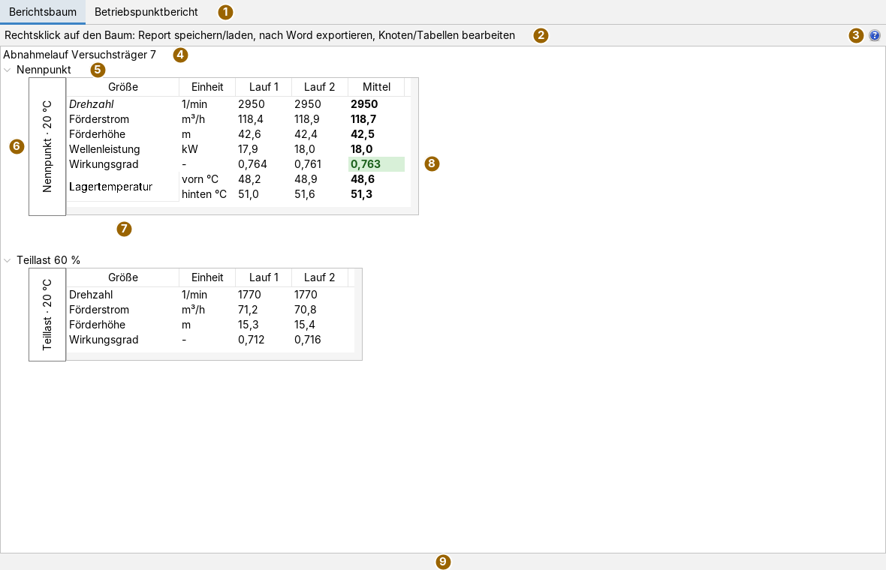
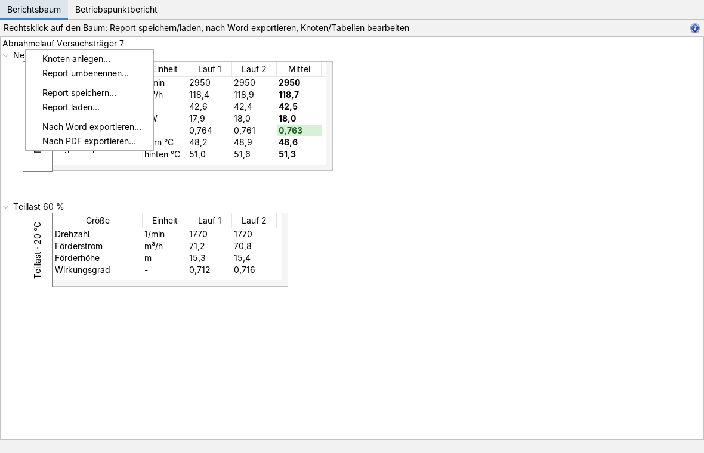
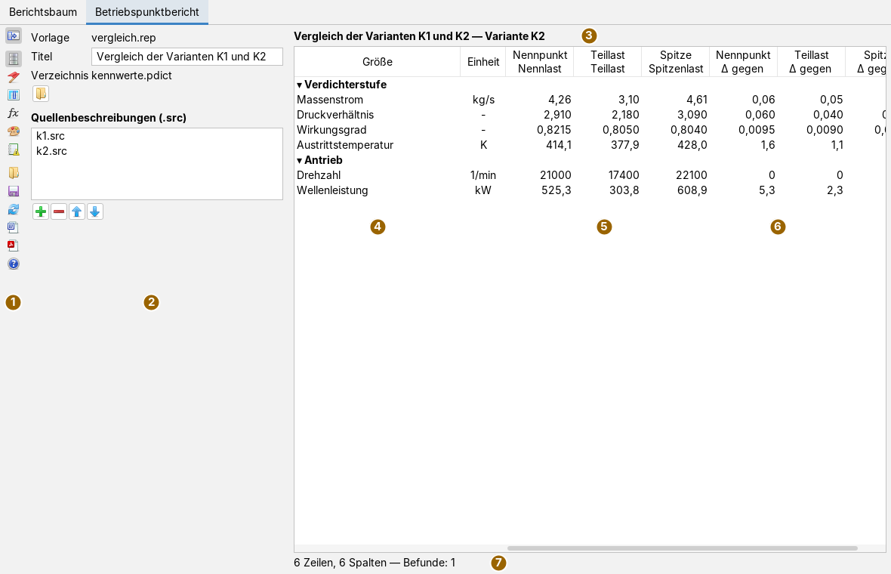
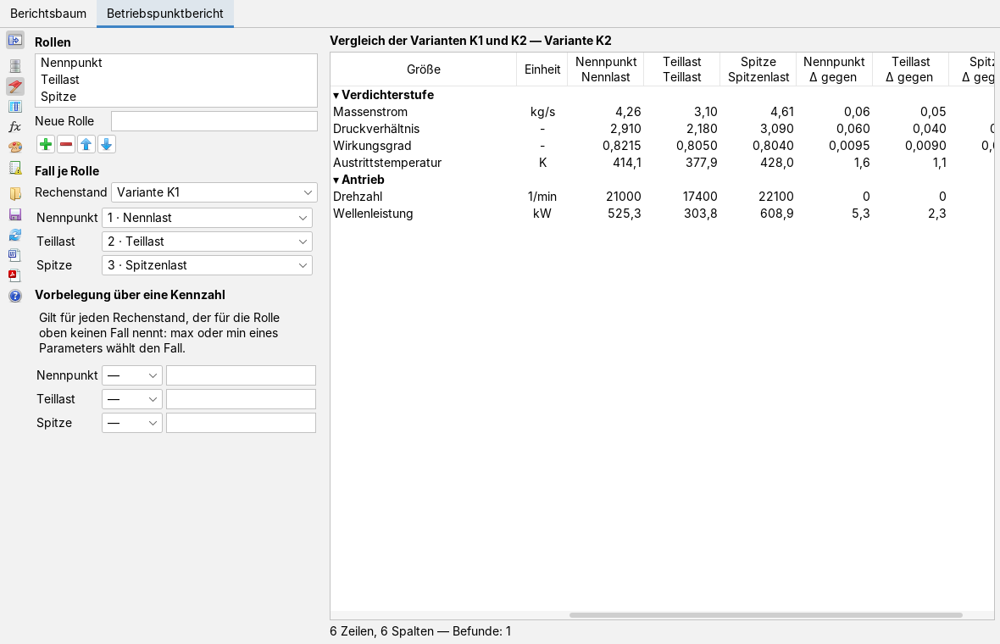
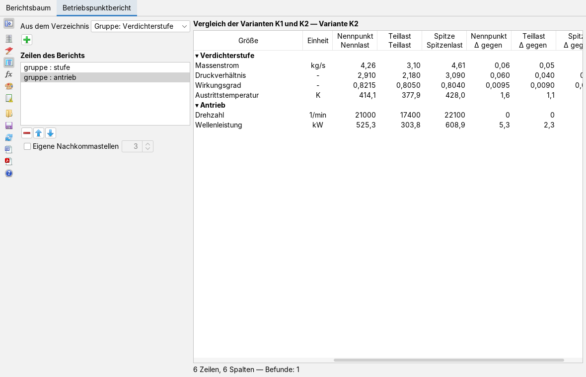
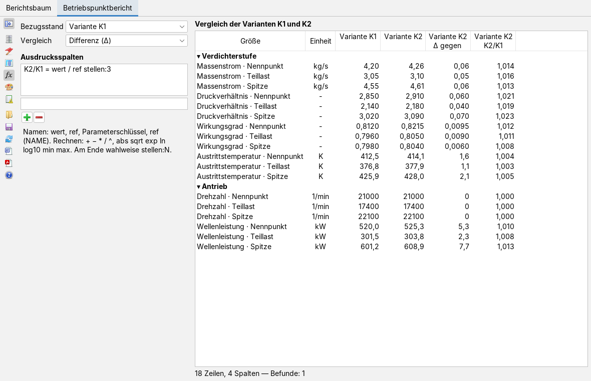
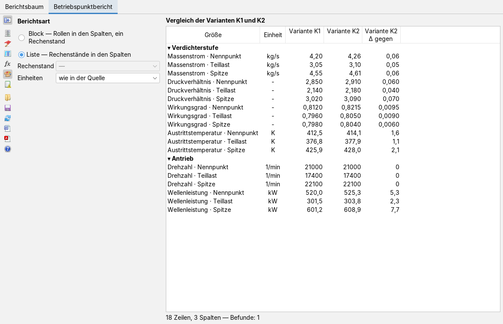
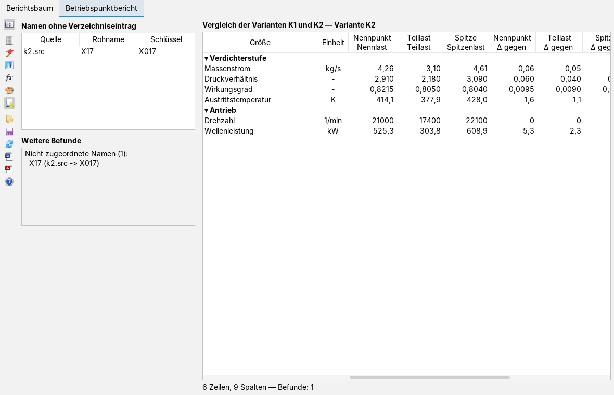

Berichte bauen und als Word oder PDF ausgeben
Bedienseite, Stand 07.10.2026. Wie man im Reiter Berichtsbaum einen Bericht aus Knoten und Tabellen aufbaut, Zellen auszeichnet und das Ergebnis als Word-Dokument oder PDF schreibt, und wie man im Reiter Betriebspunktbericht aus einer Vorlage, einem Parameterverzeichnis und Ergebnisdateien einen Vergleich von Betriebspunkten zusammenstellt. Die Bilder sind Bildschirmfotos der App mit frei erfundenen Daten: ein Abnahmelauf an einem Versuchsträger und zwei Rechenstände einer Verdichterstufe.
Das Fenster
Die App öffnet man im Menü Anwendungen mit New Report oder mit Alt+R. Sie hat zwei Reiter: Berichtsbaum für Berichte, deren Werte man selbst einträgt, und Betriebspunktbericht für Berichte, die aus Rechenergebnissen gebaut werden. Beim Öffnen steht im Berichtsbaum eine kleine Startvorlage mit einem Knoten.

Ein Bericht ist ein Baum: die Wurzel trägt den Titel, darunter hängen benannte Knoten, und jeder Knoten trägt genau eine Tabelle. Ein Klick auf das Dreieck vor einem Knoten klappt seine Tabelle ein oder aus. Die Tabellen sind keine Bilder, sondern bedienbar: man klickt hinein und schreibt.
Leiste und Hilfe
Im Reiter Berichtsbaum gibt es außer dem Hinweistext nur einen Knopf; alles Weitere liegt in den Kontextmenüs (rechte Maustaste). Die Leiste des Betriebspunktberichts ist weiter unten beschrieben.
| Symbol | Tooltip | Was geschieht |
|---|---|---|
 | Hilfe: öffnet die Doku zu dieser App (wie F1) | Holt die Doku-App nach vorn und zeigt diese Seite. Die Statuszeile meldet es; fehlt die Doku-App im Starter, nennt sie die Adresse der Doku im Netz. |
Einen Bericht aufbauen

Ein Rechtsklick auf die Wurzel oder auf die freie Fläche öffnet das Menü des ganzen Berichts:
- Knoten anlegen… fragt nach einem Namen und hängt einen Knoten ans Ende. Seine Tabelle hat eine leere Zeile und eine Wertespalte A.
- Report umbenennen… ändert den Titel in der Wurzel.
- Report speichern… und Report laden… schreiben und lesen die Berichtsdatei (XML, siehe Was gespeichert wird). Fehlt beim Speichern die Endung, wird
.xmlangehängt. - Nach Word exportieren… und Nach PDF exportieren… siehe Ausgabe.
Ein Rechtsklick auf den Namen eines Knotens öffnet sein Menü: Umbenennen…, Entfernen (mit Rückfrage), Hoch und Runter verschieben ihn unter seinen Geschwistern. Die Reihenfolge im Baum ist die Reihenfolge im Dokument.
Tabellen bearbeiten
Jede Tabelle besteht aus der senkrechten Kennung links, den Spalten Größe und Einheit und beliebig vielen Wertespalten. Überschriften über den Spalten zeigt die Tabelle nur, wenn das in ihrer Struktur eingeschaltet ist.
- Werte und Zeilennamen eintragen: in die Zelle klicken und schreiben, wie in jeder Tabelle. Auch Größe und Einheit lassen sich so ändern; die Änderung geht in die Struktur des Berichts.
- Rechtsklick in die Werte: Spalte anfügen (die neue Spalte heißt nach dem nächsten Buchstaben), Zeile anfügen und Zelle formatieren….
- Rechtsklick auf Größe oder Einheit: Zelle formatieren…. In einer verschmolzenen Gruppe gilt das Format der ersten Zeile für die ganze Gruppe.
- Rechtsklick auf die Kennung: Einstellungen ändern öffnet die Struktur der Tabelle.
Zelle formatieren setzt Fett, Kursiv, Schriftfarbe und Hintergrund; Wählen… öffnet die Farbwahl, Standard nimmt die Farbe zurück, eine Vorschau zeigt das Ergebnis. Im Bild oben ist die Spalte Mittel fett, der Wirkungsgrad grün hinterlegt und die Größe Drehzahl kursiv.
Die Struktur (Tabellen-Konfiguration) enthält die Kennung:, das Kästchen Spaltenüberschriften anzeigen, die Liste der Zeilen mit Größe, Einheit und dem Kästchen verschm. ▲ sowie die Liste der Wertespalten mit ihren Bezeichnern. Neben jeder Liste stehen Knöpfe zum Anfügen, Entfernen und Verschieben. verschm. ▲ verbindet die Größe einer Zeile mit der Zeile darüber; so entsteht die Gruppe Lagertemperatur mit den Einheiten vorn °C und hinten °C. Die erste Zeile kann nicht verschmelzen. XML speichern… und XML laden… legen die Struktur einer einzelnen Tabelle als eigene Datei ab und holen sie wieder, etwa als Vorlage für andere Knoten. Mit In Ordnung wird die Struktur übernommen; eingetragene Werte bleiben stehen, soweit ihre Zeilen und Spalten erhalten bleiben.
Der Betriebspunktbericht
Der zweite Reiter baut einen Bericht nicht aus getippten Werten, sondern aus Ergebnisdateien. Er braucht drei Dinge, die das Berichtskernmodul reporttable beschreibt: ein Parameterverzeichnis (.pdict) mit den Namen, Gruppen, Einheiten und Nachkommastellen der Größen, je Rechenstand eine Quellenbeschreibung (.src), die auf die Datei mit den Betriebspunkten zeigt, und eine Vorlage (.rep), die sagt, welche Fälle als welche Rolle in den Bericht kommen und welche Zeilen er hat.

Die Beispieldaten im Bild: zwei Rechenstände Variante K1 (vier Fälle) und Variante K2 (drei Fälle) als CSV-Dateien, ein Verzeichnis mit den Gruppen Verdichterstufe und Antrieb und sechs Größen, und eine Vorlage, die die Rollen Nennpunkt, Teillast und Spitze den Fällen 1 bis 3 zuordnet und die Differenz gegen Variante K1 verlangt. Die Kopfzeile der Wertespalten nennt die Rolle und darunter den Namen des Falls in der Datei.
Jede Änderung auf einer Karte baut den Bericht neu, im Hintergrund; dauert das länger, liegt so lange ein Wartehinweis über der Ansicht. Die Statuszeile nennt danach Zeilen, Spalten und die Zahl der Befunde, oder mit Nicht gebaut: den Grund, warum kein Bericht entstand, etwa eine fehlende Quelle oder ein fehlendes Verzeichnis. Fehler erscheinen nur dort; es gehen keine Meldungsfenster auf.
In der Tabelle bleiben Größe und Einheit beim seitlichen Rollen stehen. Ein Klick auf eine Gruppenzeile (▾) klappt die Gruppe ein (▸) und wieder aus. Leere Zellen zeigen einen Strich. Die Einheit unterscheidet drei Fälle: benannt, bewusst dimensionslos (-) und unbekannt (? in kursiver Schrift).
Die Leiste
Ein Klick auf ein Kartensymbol zeigt die Karte; das oberste Symbol blendet die Karten ganz aus und wieder ein.
| Symbol | Tooltip | Was geschieht |
|---|---|---|
 | Karten ein- oder ausblenden | Die Kartenfläche verschwindet, die Tabelle bekommt die ganze Breite. |
 | Quellen | Karte Quellen. |
 | Betriebspunkte | Karte Betriebspunkte. |
 | Parameter | Karte Parameter. |
 | Vergleich | Karte Vergleich. |
 | Darstellung | Karte Darstellung. |
 | Nicht zugeordnet und Befunde | Karte Befunde. |
 | Vorlage laden… | Liest eine Vorlage (.rep) und baut den Bericht. Relative Pfade darin gelten ab dem Ordner der Vorlage. |
 | Vorlage speichern… | Schreibt den aktuellen Stand aller Karten als Vorlage; fehlt die Endung, wird .rep angehängt. Die Pfade zu Verzeichnis und Quellen werden relativ zum Ordner der Vorlage geschrieben. Die Statuszeile meldet Gespeichert: mit dem Dateinamen. |
| Bericht neu bauen | Liest alle Dateien neu, etwa nachdem eine Rechnung neue Ergebnisse geschrieben hat. | |
 | Nach Word… | Schreibt den zuletzt gebauten Bericht als .docx (siehe Ausgabe). |
 | Nach PDF… | Dasselbe als .pdf. |
| Hilfe: öffnet die Doku zu dieser App (wie F1) | Wie der Hilfeknopf im Berichtsbaum. |
Die Knöpfe in den Karten tragen ebenfalls nur Symbole:  fügt hinzu,
fügt hinzu,  entfernt den gewählten Eintrag,
entfernt den gewählten Eintrag,  und
und  verschieben ihn.
verschieben ihn.
Karte Quellen
Oben steht der Name der geladenen Vorlage, bei einem neuen Bericht (neu, nicht gespeichert). Titel ist die Überschrift des Berichts; sie wird mit Enter oder beim Verlassen des Feldes übernommen. Verzeichnis nennt das Parameterverzeichnis, der Ordnerknopf darunter (Parameterverzeichnis wählen…) wählt ein anderes. Die Liste Quellenbeschreibungen (.src) zeigt die Rechenstände in ihrer Reihenfolge; der Tooltip eines Eintrags nennt den vollen Pfad. Plus öffnet die Dateiauswahl, in der man mehrere .src zugleich wählen kann.
Karte Betriebspunkte

Rollen sind die Spalten des Blockberichts, etwa Nennpunkt oder Teillast. Eine neue Rolle schreibt man in Neue Rolle und übernimmt sie mit Enter oder Plus; einen Namen, den es schon gibt, weist die Statuszeile ab. Minus entfernt die gewählte Rolle samt ihren Zuordnungen.
Unter Fall je Rolle wählt Rechenstand eine der Quellen; darunter steht je Rolle ein Auswahlfeld mit den Fällen dieser Datei, als Nummer und Name, und — für keinen. Ein Fall ohne Namen in der Datei erscheint als Fall mit seiner Nummer. Die Fälle kennt die Karte erst, wenn die Dateien einmal geöffnet wurden, also nach dem ersten Bau.
Vorbelegung über eine Kennzahl wählt den Fall selbst, wenn für eine Rolle kein Fall gesetzt ist: max oder min und der Schlüssel eines Parameters nehmen den Fall, in dem dieser Parameter am größten bzw. kleinsten ist. Welchen Fall die Vorbelegung gewählt hat, steht dann als → n neben dem Auswahlfeld der Rolle.
Karte Parameter

Aus dem Verzeichnis bietet zuerst die Gruppen an (Gruppe: …, nach ihrem Rang), dann jeden Parameter mit Schlüssel und Namen. Plus hängt die Wahl an die Zeilen des Berichts an; eine Gruppe bringt alle ihre Parameter mit. Die Reihenfolge der Liste ist die Reihenfolge im Bericht; die Einträge stehen so da, wie sie in der Vorlagendatei geschrieben werden (gruppe : …, parameter : …). Für die gewählte Zeile setzt Eigene Nachkommastellen eine Stellenzahl von 0 bis 12 an Stelle der aus dem Verzeichnis.
Karte Vergleich

Bezugsstand ist der Rechenstand, gegen den verglichen wird. Vergleich wählt keine Vergleichsspalten, Differenz (Δ) oder Prozent (%). Ausdrucksspalten rechnen eine eigene Spalte: in das Feld Überschrift = Formel schreiben, mit Enter oder Plus übernehmen. In der Formel steht wert für den Wert der Zeile, ref für den Wert im Bezugsstand, dazu Parameterschlüssel und ref(NAME); gerechnet wird mit + − * / ^ und abs sqrt exp ln log10 min max. Ein angehängtes stellen:N setzt die Nachkommastellen. Die Schlüsselwörter gehören zur Vorlagensprache, die reporttable beschreibt.
Karte Darstellung

Berichtsart wählt zwischen Block (Rollen in den Spalten, ein Rechenstand) und Liste (Rechenstände in den Spalten). Im Block wählt Rechenstand, welcher gezeigt wird; bleibt es bei —, nimmt der Bau bei eingeschaltetem Vergleich den ersten Rechenstand, der nicht Bezug ist, sonst den Bezug. Einheiten rechnet alle Werte um: wie in der Quelle (nichts umrechnen), SI, Imperial oder das Profil RR aus dem Einheitensystem des Rahmens.
Karte Befunde

Namen ohne Verzeichniseintrag listet jede Spalte einer Datei, die keinem Parameter des Verzeichnisses zugeordnet werden konnte, mit der Quelle, dem Namen in der Datei und dem Schlüssel, den die Namensregeln daraus gebildet haben. Solche Spalten gehen nicht verloren, erscheinen aber nicht im Bericht, bis das Verzeichnis sie kennt. Weitere Befunde zeigt den ganzen Befund des letzten Baus als Text, bei einem Fehler dessen Meldung.
Ausgabe als Word oder PDF
Beide Reiter schreiben über dieselben Ausgabewege, beide in eigenem Code ohne Fremdbibliothek. Im Berichtsbaum liegen sie im Kontextmenü der Wurzel, im Betriebspunktbericht in der Leiste. Gefragt wird nach dem Dateinamen; fehlt die Endung .docx bzw. .pdf, wird sie angehängt.
- Word (.docx): ein bearbeitbares Dokument, A4 hoch mit 2 cm Rand. Der Berichtstitel wird Überschrift 1, jeder Knoten Überschrift 2, so dass Word daraus ein Inhaltsverzeichnis bauen kann. Jede Tabelle ist eine echte Word-Tabelle: die Kennung als senkrecht stehende, über alle Zeilen verbundene Spalte, verschmolzene Größen als verbundene Zellen, die Zellformate als Schrift und Hintergrund, die Spaltenüberschriften (wenn eingeschaltet) als Kopfzeile, die sich auf jeder Seite wiederholt. Die Werte liest die Ausgabe aus den Tabellen der Oberfläche, so wie sie gerade dastehen.
- PDF: derselbe Bericht, die Knoten untereinander; passt der Kopf einer Tabelle nicht mehr auf die Seite, beginnt sie auf der nächsten. Schrift, Schriftfarbe und Hintergrund der Zellen werden übernommen. Die Kennung steht nicht senkrecht daneben, sondern in der Überschrift der Tabelle, und verschmolzene Größen erscheinen in den Folgezeilen mit leerem Namen.
- Betriebspunktbericht: geschrieben wird der zuletzt gebaute Bericht; gibt es keinen, sagt die Statuszeile Es gibt noch keinen Bericht zum Ausgeben. Jede Gruppe wird ein eigener Abschnitt mit Überschrift und Tabelle, die Kennung setzt sich aus Berichtstitel und Gruppenname zusammen. Die zweizeiligen Spaltenköpfe werden in eine Zeile gesetzt, die Teile mit einem Mittelpunkt verbunden. Leere Zellen bekommen einen Strich, eine unbekannte Einheit ein
?und kursive Schrift. Nach dem Schreiben meldet die Statuszeile Geschrieben: mit dem Dateinamen.
Ein Fehler beim Schreiben erscheint im Berichtsbaum als Meldung mit dem Grund, im Betriebspunktbericht in der Statuszeile.
Was gespeichert wird
- Berichtsdatei (XML): Titel, Knoten und je Tabelle Kennung, Zeilen mit Größe, Einheit und Verschmelzung, Wertespalten, Spaltenüberschriften ein oder aus und die Zellformate. Die eingetragenen Werte stehen nicht darin; die Datei ist eine Vorlage, die man wieder füllt.
- Tabellenstruktur (XML): aus der Struktur einer Tabelle gespeichert, dasselbe für eine einzelne Tabelle.
- Vorlage (.rep): der ganze Stand der sechs Karten; Verzeichnis und Quellen mit Pfaden relativ zur Vorlage. Das Format beschreibt reporttable.
- Arbeitsstand: beim Sichern des Arbeitsbereichs merkt sich die App die Struktur des Berichtsbaums (wie in der Berichtsdatei, also ohne Werte) und im Betriebspunktbericht den Stand der Karten mit absoluten Pfaden, die zuletzt geladene oder gespeicherte Vorlagendatei, den Rechenstand des Blockberichts und die Einheitenwahl. Ein Stand, der sich nicht lesen lässt, wird gemeldet und übergangen.
Tastatur und Maus
Alt+R öffnet die App. Die rechte Maustaste öffnet die Kontextmenüs im Berichtsbaum (Wurzel, Knotenname, Kennung, Werte, Größe und Einheit). In den Tabellen beginnt man durch Hineinklicken oder Lostippen mit dem Schreiben, Enter übernimmt. In den Karten übernimmt Enter den Titel, eine neue Rolle, einen neuen Ausdruck und den Parameter der Vorbelegung; Titel und Parameter werden auch beim Verlassen des Feldes übernommen. Ein Klick auf eine Gruppenzeile der Tabelle klappt die Gruppe ein und aus. Weitere Tastenkürzel hat die App nicht.
Grenzen
- Die Werte des Berichtsbaums werden von Hand eingetragen und weder in der Berichtsdatei noch im Arbeitsstand gespeichert. Einen Anschluss an die Tabellen anderer Apps gibt es noch nicht.
- Knoten anlegen, umbenennen und entfernen, die Struktur einer Tabelle und das Zellformat öffnen kleine eigene Fenster, die man vor dem Weiterarbeiten schließt; im Betriebspunktbericht gibt es außer der Dateiauswahl keine.
- Die Wertespalten im Berichtsbaum haben eine feste Breite; ein langer Spaltenbezeichner wird in der Oberfläche gekürzt (im Dokument nicht).
- In der Word-Ausgabe heißen die Köpfe der Spalten Größe und Einheit immer Größe und Einheit, auch bei englischer Oberfläche.
- Im Betriebspunktbericht kommen die Unterzeile der Vergleichsspalten (Δ gegen …) und der Text der weiteren Befunde aus dem Berichtskern und sind deutsch, auch bei englischer Oberfläche.
- Das PDF kennt keine senkrechte Kennung und keine verschmolzenen Zellen; zweizeilige Spaltenköpfe des Betriebspunktberichts stehen in Word und PDF in einer Zeile. Zeilen mit gleicher Beschriftung werden nicht selbsttätig verschmolzen.
Was die App kann und worauf sie aufbaut, steht in der Übersicht; Verzeichnis, Quellen, Vorlage und Vergleich im Einzelnen in reporttable.
Symbole: Fugue Icons von Yusuke Kamiyamane, Lizenz CC BY 3.0.